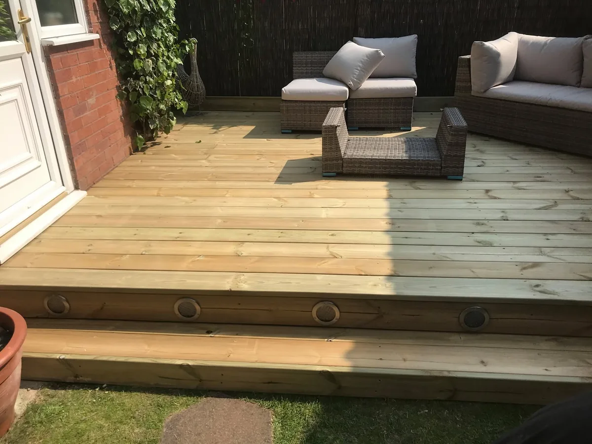

Outdoor living
Premium Decking

Decking can create a useful seating or entertaining area where levels, access or the shape of the garden make paving less suitable. We prepare the sub-base and framing before fitting boards, edges and steps with a clean finish.
The layout is planned around safe movement, useful proportions and the relationship with the home and garden.